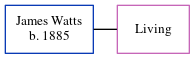

James William Watts 1885 -
[ Home ] | [ Calendar ] | [ Surnames Index ] | [ Census Index ] | [ Family History ]James Watts, the husband of Annie Harriett Cowell (the first cousin twice-removed on the mother's side of Nigel Horne), was born in 18851. He married Annie at St Saviour's Church, Westgate On Sea, Kent, England on Sep 15, 19232.
Citations
- Kent, Canterbury Archdeaconry Marriages - Findmypast
- England & Wales marriages 1837-2008 - Findmypast
Media
England & Wales marriages 1837-2008 - BMD/M/1923/3/AZ/000265/066
Family Tree
Generated by ged2site. Last updated on Jun 11, 2024